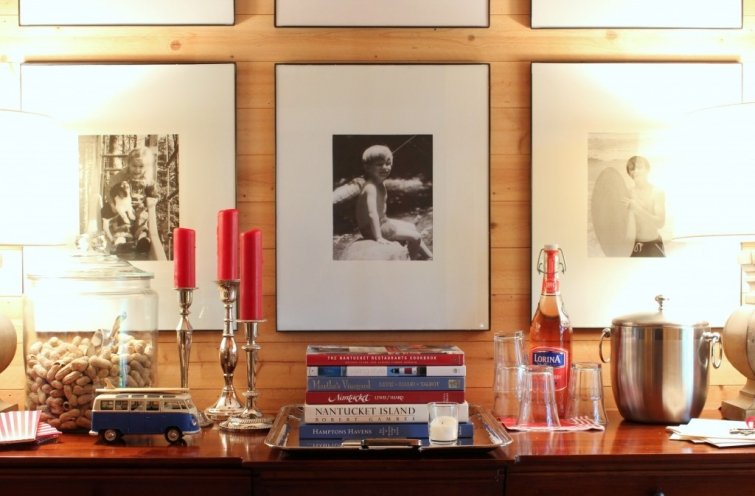

.png)
.PNG)
.PNG)
.PNG)
.PNG)
.PNG)
.JPG)
.JPG)
.PNG)
.PNG)


Sometimes you just have to unplug.
I didn’t really mean to stay away from the computer for a week. In fact, it was only going to be two days, but then I read Kari Anne’s post here.
And it inspired me. I decided I wanted to give you all a summer home tour – complete with my list of favorite things about summer. And once I get an idea in my head, I do whatever it takes until it gets out of there and into reality land.
But this house was in no way ready for a tour – not a summer one or anything else. In fact, what it needed was a long overdue spring cleaning. Yes, I know it is the middle of June. That’s how far behind I was.
 Because May is when your college daughter returns home with all her clothing and books and linens and things, and you tell her to just put it all in a pile somewhere until you can find space for it. Because when you are a teacher, May is also the month you rush to finish every single piece of paperwork ever invented by mankind and leave the rest of your life piled up. And those piles patiently wait on you to sort them all …in summer. 🙂
Because May is when your college daughter returns home with all her clothing and books and linens and things, and you tell her to just put it all in a pile somewhere until you can find space for it. Because when you are a teacher, May is also the month you rush to finish every single piece of paperwork ever invented by mankind and leave the rest of your life piled up. And those piles patiently wait on you to sort them all …in summer. 🙂
And if you have looked around you’ve seen that summer is definitely here. Hallelujah! So I dove into those piles and tried to make space in the attic for college things and I made bags of donations for Goodwill and I scrubbed walls high and low and washed linens and dusted bookshelves and vacuumed mattresses and … fought lizards on the porch.
Oh yes, I know lizards are supposed to be good and eat insects, but this lizard? This lizard thinks our porch sofa is his sofa for napping and um..for his…um..restroom. And finding him on that sofa or under a throw pillow has made me scream and given me a heart attack too many times.
I’ve tried to vacuum him up…twice. He escaped both times.
I decided I needed to rearrange the furniture on the porch so that he would be confused. That meant bringing in another piece of wicker that I had in the garage because moving that sofa meant the domino effect of furniture happened…which meant…that old piece of furniture I brought in had to be repainted.
The moved sofa didn’t confuse him. He found “his spot” again. 🙁
So I drank a Coke and contemplated my next battle plan.
I’ve learned that Lowes does not carry anything remotely resembling lizard deterrent. 🙁 Perhaps a sticky trap will catch him.
I’ll add that to my shopping list.
During my unplugged week, (when I wasn’t making battle plans for the war on the lizard) I thought about summer and all the good things I like about it….like ice cream. 🙂
So while I was cleaning, I started coming up with ideas for how I wanted to decorate the house for summer…for fun…for your summer home tour here…starting with ice cream.
Did you know that old ice cream containers will make a planter if you wash them out and poke drainage holes in the bottom? And did you also know that banana split ice cream truly tastes like a banana split? (except of course, you have to add your own whipped cream. 🙂 )
During my unplugged week, I made new tags for the storage baskets on the back porch, and I pulled out an old ice cream churn to use as another geranium planter, and I thought more about decorating for summer fun…which made me think of frozen Cokes because I like them in the summer. So I filled the big jar on the porch with bottled Coke..totally logical, right?
And I thought more about ice cream and all its yummy flavors. So I made a chalkboard listing them. Which one is your favorite?
There are currently five ..yes, really five containers of ice cream in our freezer…all different flavors.
Besides ice cream, I also thought about summer being a good time for playing games and watching movies.
And I bought a set of toy cars that made me think of summer traveling.
And while I was cleaning everything in the house, I thought of all the things I want our family to do this summer, and I started making a list.
So our summer to-do list chalkboard was created.
And now that the piles have been taken care of and the house is clean (well almost all clean…there are still two rooms that need some work 🙁 ) it is time to get started on this summer list.
So that was my unplugged week. Much was accomplished with the house, and now I can actually concentrate on summer fun. And guess what. Your tour is not over. This is just part 1. 🙂 Remember, I still want to share my list of favorite things about summer with you, so please come back for more of the summer home tour later in the week. I can’t wait to show you the dining room!
I’m off to check on a certain lizard.
Until next time…


.PNG)
Just finding your site…love it! As for the lizard, if still a problem, I have a solution. We used to have the same lizard problem at a camper we had “parked in the mountains. An “ol-timer” told me to sprinkle crushed red pepper or cayenne pepper around the outside of my screen porch. It worked! I went to the dollar store and bought large, cheap bottles of both and sprinkled around the outside and the little varmint stayed away. I have been told this works for snakes too, as they spice “burns” their skin.
Kelly…there is something so magical about your porch…it is one that always wants you to come in and sit and never want to leave…So crushing on the chalkboards and the color of the frames…one of my favs!..the entire color scheme of your home is truly my favorite..and must say that your handwriting is magnificent!..
———————————————————————
Thank you again for such kind words. I love the porch too, but would love it more if Lizard would leave.:) I have been sharpening my chalk in an old school pencil sharpener lately, and it has made writing on chalkboards so much easier. I can’t believe the difference it has made!
Enjoy your weekend!
Kelly
Kelly, I love the look of your house for summer! (I read Part 2 before reading Part 1.) I wanted to comment on Part 2 about how clean your house is and then I realized from Part 1 that you had been cleaning up a red streak. Everything looks beautiful! I want to curl up somewhere (on that screened porch) in your home and read a book…but first I must spring clean. Thanks for the inspiration! Enjoy your summer and start checking off things on that to-do list.
————————————————————————
Don’t you know you are supposed to read things in order girl! LOL (And this coming from the one who reads the last page of a novel before she even starts a book!) If you curl up on the porch with a book, make sure it is on the swing. Otherwise you may be sitting on the lizard.
Would you believe we have already checked off several things on that list?! 🙂
So happy you liked the summerized rooms.
Kelly
Katrina and Josie, did you see the titles of Kelly’s books?!!!
———————————————————————–
I have been in love with New England forever! That’s why I have so many of those books. We have made it up through a lot of the coast, but we’ve not been to Nantucket and Martha’s Vineyard. I hope they will be on our next “big trip” somewhere…probably going to have to wait until I retire though.
Kelly
Oh wow….you’ve really been busy! Here too…isn’t that what summer is for? Your lizard story is priceless…good luck with that! So…what’s the “new room”…I saw on your chalkboard? House looks great…clean and summery! 😉
——————————————————————–
Yes, that is exactly what summer is for…at least at the beginning of the season. And then it is time for fun! The new room is the room over the garage that has been in progress for two years. We just have a hard time making time to finish all the little things that are left to do in there. Hopefully it will be through very soon.
Kelly
Out at our farm, if I find a lizard in the house, I capture him in a drinking glass and let him go outdoors. They don’t mean to bother you!
———————————————————————
That is probably what I am going to have to do to capture him, but we are going to have to take him far away to release him. Hopefully that will work. I know he means no harm. It just startles me (and I guess I startle him!)
Kelly
I truly love your decorating style/flare and of course,I’ve mentioned in former posts how much I LOVE the color RED. I marvel at all the details and doo-dads, because for many and various long-winded reasons, my daughter (Kelly) and SIL and my five grandchildren are in my life (and house) for an extended period of time. Though not actually living at my house, she and the children have been home-schooling, etc.. there daily – since mid April. I have had to child-proof the house and put up and away all the breakables, pretties, etc… so when I see your pictures I laugh to myself at how quickly they would rearrange everything. They are ages 8, 6, 5, 3 and 1 year. Hope you get to check off a lot of those activities I see on your to do list. Happy Summer.
———————————————————————–
I do remember the child proofing days. They were in our first home, and this one is definitely not child proof. It is a lot of work to have it that way, and you are wonderful to do that for your daughter and SIL. Wow 5 children! They do grow up so quickly.
Happy summer to you. Enjoy those grandkids!
Kelly
Hi Kelly, You had me laughing over your lizard run in! You’re home looks beautiful! Thanks for sharing!
———————————————————————–
The story IS funny Patty, but being startled by that darn lizard is not. I only feel “safe” from him on the porch swing (which is actually a nice place to sit. 🙂 ) Thank you for your kind compliments on the house. I appreciate you for reading and jumping in the conversation here!
Kelly
Bluebell buckets!! You are so genius.
I love the little VWs…saw that toy in Hawaii and wanted it but resisted! Happy home you have!!
————————————————————————-
No genius here…I (along with everyone else in this house) just love ice cream! You should have bought that toy VW in Hawaii. I searched for one with a surfboard here, and although I found a couple on Amazon, I figured my sweet husband could whip one out the surfboard pretty quickly. (And he did once we nailed down what I wanted it to look like. 🙂 )
Thanks for commenting Phyllis!
Kelly
Kelly,
I have been wondering what you have been up to. I love all of your summer decorations and what makes them even better is that most of them are not just decorations but are useful items as well. My favorite room in your house is still the game room with all of its touches of green but the screened in porch is looking very inviting as well. I don’t know what it is about Coke but I always crave it in the summer time too, especially Coke floats. We usually have several flavors of ice cream in the freezer too, right now just two. Thanks for sharing your summer decorations with us. I can’t wait to see what else you have done.
———————————————————————
Yes, they are definitely useful (except of course for the toy cars. 🙂 ) Coke Floats and frozen Cokes are two of my favorites. There seems to always be a plastic Coke in the freezer now waiting to have some ice formed in it. It sure beats the heat! Thank you so much for taking the time to read and comment Dawn.
Kelly
Kelly,
i just love your porch! I’m so excited to have just rented a home with a screened porch. The screens were all removed in late winter for replacing, but before the landlord had a chance to do so, a sweet bird (a Phoebe)made a nest in the rafters so we’re anxiously waiting for her babies to fly the nest before putting up the new screens. Please don’t vacuum up the lizard or, heaven forbid, get sticky traps. They are SO inhumane. Animals have torn off their legs trying to get off them. It’s true what Ann says about it following its food source on your porch. Catching and releasing far from your property is the way to go for sure.
————————————————————————–
I am glad you like the porch Ellie. Hooray for your screened porch! How thoughtful of you all to wait on the babies to fly before putting up the screens. It brings to mind the Patricia Polacco book, Mr. Lincoln’s Way and what they did for some baby ducks in a school. I will heed your advice on the sticky traps and try something else for Mr. Lizard.
Kelly
Love the pictures and it has inspired me. . .beginning tomorrow. Regarding your squamate reptile (lizard). . . .creatures only stay where their food source is. If you remove the lizard’s food source, it will leave. Food source – bugs, spiders and flies, oh my! He is eating those brown recluse and black widow spiders. Let him live.
————————————————————————
Can I house train him? LOL I just feel like every time I sit on a piece of furniture he might be under a pillow or under a cushion. Perhaps I should just check each one before sitting down. He must not be terribly afraid of humans since he stays out there with all our talking and everything.
Kelly
I was wondering what happened to you! You were doing just what I need to do. My college son is home and he has his pile of stuff I need to do something with. It is good to have our college ids home isn’t it!
Your porch looks great! As for that lizard…Bless your heart! Bless its heart. haha All is fair in love and war!
Thanks for the inspiration and ideas! Happy Summer!
————————————————————————
It is amazing what all college kids not only take with them, but also what they accumulate over the school year! Glad you like the porch Jayne. I hope that lizard leaves! (but I know that is not likely. :() Got your email about the pinterest board. Please do add me to your pinners. Thanks for including me!
Kelly
Everything looks beautiful already, don’t know what more you can do…you can come to my house and change things up. I have brain freeze when it comes to that and my house looks the same all year long…BORING.
As for the lizard…make friends with it and have him be part of your family. Maybe that is what he/she wants…a family. We have them here and our one doxie looks for them when she goes outside. She thinks they are her friends. LOL
———————————————————————-
If we still had our beagle, he would be having a fit over this lizard! I am sure your doxie has a good time with them outside.
Thank you so much for reading the posts here and leaving your sweet comments, Cheri!
Kelly
Kelly, your house looks great.Love your changing color schemes and all the neat little touches you do that add so much. I have
several little lizards (skinks) that drive me crazy too. I had 3 of my granddaughters yesterday and they caught 2 of them and took them down to the creek. I have a feeling they may return with buddies.
————————————————————————
Send your granddaughters my way so that they can catch my porch lizard please! I hope they didn’t return to your house with those little creatures for their friends.
Kelly
Oh I love your home, so pretty and good luck with that lizard.
———————————————————————–
Thanks Marty! (on both things!)
Kelly
Kelly – your “summer” house looks so beautiful. What an inspiration! I need to get out to my porch and get it cleaned up and decorated…if only summer lasted longer here in Western, NY! Oh, and COKE FLOATS…YUM!!
———————————————————————-
I am happy you like the summer decorating Jen! Yes, go get on that porch of yours. At least your summer temperatures are milder than what we get here in Georgia. I do need to make some Coke floats…very soon. Maybe even tonight! (The ingredients are all just waiting in the refrigerator.) 🙂 Hope you get one soon!
Kelly
Oh Kelly, you do what you do very, very well! Now I am going out to tweak my garden room and I am filled with inspiration! Thanks! As for the lizard, how about a sweet little kitten? Our 26 pounder is a love magnet for our family and he loves to play chase and catch. Double bonus. BTW can you tell us were you found that great VW van? Too cute. Happy summer to you and yours.
———————————————————————
You are so sweet Leslie! So glad I could give you a little inspiration for your garden room. I’m afraid we can’t have a kitten here…daughter is allergic to cats. 🙁 But thanks for the advice!
I bought the VW vans here: http://www.amazon.com/Set-Volkswagen-Classic-Scale-Green/dp/B0043YCGRE/ref=sr_1_16?s=toys-and-games&ie=UTF8&qid=1403223669&sr=1-16&keywords=vw++1%3A24 But I repainted all of them. The bright blue one was navy, and the green one in the playroom was hunter green. The red one, which you will see in the next post, was supposed to be red, but it was really more of a rust color…so I painted it as well. Hope this helps!
Kelly
Kelly,
The house looks wonderful. Seasonal to the max. In fact I noticed that the pillows really make the room ready for Independence Day and are so summery.
I love Blue Bell ice cream…a takeaway from our job transfer to Texas all those years ago. We can’t get it in our west coast stores, darn. But our Austin son always has it on hand when we visit.
Can you catch the lizard and transplant him? If they creep you out too much, maybe hubby would do it? I’ve caught them when they inadvertently sneak into our office and they are always so appreciative to be back in the great outdoors where they belong.
I also love the green and black accents in the sun room.
xo,
Karen
—————————————————————–
Glad you liked the rooms Karen. I am sorry that you all can’t get Blue Bell in California. They must really be regional. I thought they were nationwide, but from everyone’s comments I see that they are not. Yes, my husband (or perhaps my daughter) will have to catch the lizard because they totally creep me out!
Kelly
I’ve been missing your posts, but I’m glad you got a chance to unplug and catch up. After a lot of busy-ness, I always love to have a couple days to just putter around the house. I love how your house is looking for Summer, especially the red, white, and blue on the porch. Using the ice cream tubs for geranium planters is genius! You always raise the bar with your creative ideas. Can’t wait to see the dining room!
————————————————————————-
Aw thanks Jill! I always hope that I can share ideas that other people can easily do without having to spend a ton of money. Ice cream buckets come pretty cheap around here the way we go through ice cream with our crew!
Kelly
Kelly
You simply amaze me with what you can get accomplished while finishing your school year! Your house is so darling. It reminds me so much of growing up in the midwest and my idea of what the perfect house would look like! Where did you find those wonderful jars with the metal (what looks like metal) lids? Love all the black and white family photos and the way they are framed. You have great style!
———————————————————————-
Thank you for your very sweet compliments Cindy. 🙂 I believe those jars came from Target..not sure. I have had them for a number of years. I love the black and white photos too. Since I seem to change color schemes so much around here, I have a hard time committing to artwork! LOL
Kelly
girl, you never fail to amaze me with your creativity and vignette skills…you could make a fortune by becoming a merchandise expert with the way you display things…and your vignettes make sense! (i hope that makes “sense”)!
i’m coming to your house this summer to have fun. and can you bottle your energy and give me some when i get there?
i think instead of cleaning today i’m going to get a pedicure…one of the “perks” of retirement is that the messy house will be here when i get home!
———————————————————————–
Thank you thank you Judy for the “make sense” comment! That is what I say is missing in so much of home decor today. The things that are put together in so many rooms just don’t even make sense to me. (Or maybe I just have limited brain skills. LOL) Come on over and we will have fun together. 🙂
What an inspiration you are to me!! I had my teacher piles too, and just got those taken care of. Then I had my “junk kids brought home” piles have 1 taken care of and now 2 to go. I DO like everything to be organized and have its place, I seem to be much sweeter in general when my house organized and picked up. Doesn’t have to be perfect but at least picked up!! (with three kiddos it is NEVER perfect!)
My question to you is do you have “bins” of color themed items to decorate with? I know you change yellow, blue, red etc. Everything from candles and books to pillows, so do you store it away TOGETHER to make it easier to pull out??
PS. Being from Texas my husband I adore Bluebell Ice-cream…..even had some shipped up here for his birthday one time. It has been in Virginia for maybe a year now!!! Praise to the MOST HIGH!!!!
—————————————————————————
I totally get your comment about being “sweeter” when everything is organized. 🙂 And with 3 kiddos here as well there is always some kind of pile waiting. (Some are even made by me!)
For organization of the decorating things, I have seasonal tubs in the attic – more like tubs labeled with the names of the months on them. The small cabinet in the dining room holds all the Christmas china and gingerbread houses in jars. The pillows are a big mess right now. They are all in tied up garbage bags out in the garage right now. (They had been in the foyer closet for awhile.) As soon as all my husband’s stuff is moved out of our shared study and into the room over the garage, I will then have a closet for the pillows and all my craft stuff. Not sure if I am going to keep the study as a study or swap it and the playroom for my office. If I change it, some rewiring for computers will have to be done. One step at a time for everything. 🙂
Kelly
Kelly…..your porch is beautiful as usual. Love the furniture change!! I hesitate to put geraniums on my porch because of the mess the petals make….do you find this annoying? LOL…..but every time I see your porch I want red geraniums again!! I ordered the pottery barn pillow you have on the couch and it is back ordered(boo!)…..I love the flag and red, white, and blue decor in the summer too! You mentioned in a previous blog that you have to go back to school in July….WHAT?….is your school a year round one? Thanks for your inspirational porch decor….LOVE your blog!! Happy June!!!
————————————————————————
Thank you Susan. I have to pick up the petals or they leave a red stain…scrubbed some off the porch floor the other day. I hate that the pillow is back ordered. I got that one at the PB Outlet on sale. We do go back to school in late July, and no it is not supposed to be year round school. It seems that our summers shrink each year.
So glad you are enjoying the blog. Thank you for reading and leaving your comments here!
Kelly
Mercy Me! Mercy Me! What an inspiration, Kelly!! This was Sooooo much fun– I want to hit the deck a runnin!! And get my summer on! But since I’ve had some vein procedures ( teacher legs!) — ladies — take care of you feet and legs if you are on them 10-12 hrs a day or there may be a price to pay! So I am having to take it easy– BUT I can dream and make plans for later this summer. Love all your changes!! Love your porch changed around! LOL with the leapin lizard antics– I can just see you after that stinkin lizard– they are crafty and here in FL they are abundant! Found one in my bed Yikes! And sic my 4lb Yorkie, Holly Berry after it — pandemonium– can I tell you! Thank you for a great wake up call! I never know what to expect from you, girl!! Knew you were up to something! 🙂 Still laughing!!
———————————————————————-
Ohhh…not fun to have to have leg work. You do need to take it easy. And yes, I am guilty as charged with being on my feet for long periods of time. I don’t sit down much during the school year.
If I found a lizard in my bed, I don’t think I would ever be able to go to sleep!!! How very scary!! A dog and a lizard is a MESS. Glad I could give you a laugh Louvina. 🙂
Stay off your feet.
Kelly
I would like a week free to just go through each room and declutter and clean. With the grands here two days a week, it is just not possible. Maybe in the fall, before I get out all my autumnal decor, I can swing it then!! I always enjoy seeing picture of your house, Kelly. It is so warm and welcoming. And I am with you on Lizards!!UGH….hope you get rid of him soon!
——————————————————————-
You are right that it would not be possible to do that heavy cleaning with grandkids here twice a week. I am at a good stage in life that affords me the freedom to do that. Thank you for your sweet words about the house.
I hope the lizard is gone soon too, and I have not seen any “evidence” of him in the last day or so. 🙂 Maybe he doesn’t like such a clean porch!
Kelly
What a lovely home you have Kelly. Absolutely <3 your porch! I am sitting in my porch as I write this….we have a robin sitting on her nest in the vines covering the porch windows. A bird's eye view if you will pardon the pun 🙂
Enjoy your summer.
———————————————————————-
Thank you Nancy. I am happy you like the porch. It sounds like your porch is a pretty awesome place too. Having a bird’s eye view of the bird’s nest is delightful!
Kelly
Good morning Kelly: This post so reminds me of the children’s book, If You Give a Mouse a Cookie! If You give Kelly an Inspiration…she will..redecorate:-) So cute and so inviting. You porch is definitely a place one could so relax in…except for that rascally lizard. Just put him outside with a half gallon of ice cream and he would grow so plump he couldn’t possibly make it inside again:-) Just a thought! Anyway, thanks again for such a lovely post. Blessings…Gail
————————————————————————
Yes, it does, doesn’t it?! 🙂 I like the idea of the ice cream to fatten him up! The only place I feel “safe” from being scared by the lizard out there is the swing. He has yet to find his way up to it.
Kelly
I was checking your blog the last couple of days and wondering where you were. I thought, hmmmmm, she’s already on another trip? Your home is always so welcoming and pretty. I have to say that even on a messy day at your home, I am sure I’d have no problem settling in on your delicious porch, Lizard and all! Poor thing just wants a cozy home and like the rest of us, finds yours irresistible. Coke, ice cream and well, those books in your second picture with Nantucket, Hamptons titles would definitely have me settling in for the afternoon on a wicker piece and let the escape begin…… P. S. I am with Mimi, you have me curious of the “have a party in the new room”. Can’t wait for that reveal Kelly.
Debra
————————————————————————
I’m afraid house cleaning is not nearly as fun as traveling! Sorry to disappoint you. Yes, lizard enjoys the porch…sofa, ceiling fans, and there are even speakers out there from the stereo. He has it made! I hope to show the new room in a couple of weeks. I have curtains to sew and a cabinet to paint and 2 Ikea chairs to put together. Then the fun accessorizing begins!
Kelly
I sure hope you get that lizard. I would scream, too. It would have no chance with Bailey and she would have the house destroyed trying to get it. Your house always looks great. We can’t see the dust.
———————————————————————
I need Bailey to come and catch it! Our previous dog had a lot of lizard “friends” around here and would go crazy barking at them. Thank you for the compliment on the house. The piles of things around here were worse than the dust!
Kelly
Very inspiring post for decorating in the summertime. As far as the lizard goes, we lived in the tropics for years and lizards seem to be territorial and never go very far in their lives. You might try shooing him out the door with a broom, but he thinks your porch is his home and he’ll probably return sooner or later.
Sam
———————————————————————–
He goes out the door…there is a gap between the floor and the doors. Then he returns back to “his” porch for his nap and all. If I could catch him, I wonder if I took him miles down the road if he would return since he is territorial. Thanks for the info. By the way, loved the salad on your website!
Kelly
Party in the new room?…..Room above garage? … Can’t wait to see it!
———————————————————————-
Boy you all are observant! Nothing gets past you guys. 🙂 Yes, the room above the garage. It currently has a refrigerator and a coffee maker. Sounds like a party right? LOL
Kelly
Sticky trap is the way to go. We have been trying to catch a chipmonk who moved in and is digging up all of my flowers in pots on the deck. Took several tries to get him in a hava hart trap. He is still alive just relocated about 2 miles away to some woods. Good luck. We have them in our garage too.
————————————————————————
Oh my goodness…chipmunks?! That would really be something! They are so cute, but I know they could be a problem as well. Taking him 2 miles away was a smart thing to do. Glad we don’t have those on our porch!
Kelly
‘Take naps’: the best part I like in the things to do board:)
Well, deep cleaning is not fun and I am sure you must be an enthusiast to do that. I must say that your home looks beautiful and CLEAN..It reminds me of my mother and all her efforts for cleaning home. I play the part your daughter plays for the home; we are the dirty ones 🙂
————————————————————————
I would have to agree with you that naps are one of the best things on there. No deep cleaning was not fun, but there is certainly a lot of satisfaction in knowing that it does not have to be done like this for quite awhile.
Kelly
Kelly your home is amazing. I noticed that even the curtain rods and rings are colour coded for Summer!!
———————————————————————-
Very funny! You are something to be noticing the curtain rods Colleen! I suppose it is winter where you are, right? I will try to send some summer vibes to you.
Kelly
Kelly, I love your summer touches to your home…the bright red pillows, the peanuts in a jar, the VW vans (which I grew up with in Brasil)’ the ice cream accents, the red geraniums, the summer to do list…and on and on! I was just “summerizing” my house today too and plan to post very soon. Love your taste and style! So happy to have found your blog! Happy Summer to you!
———————————————————————
Goodness, Gracia, you noticed it all! Saw all your pretty summer touches in your home over on your site. Loved all the stripes. Summer is so fun to decorate for, isn’t it?!
Happy summer to you too!
Kelly
Kelly,
Your house looks beautiful with all your pretty touches–as usual! I can sympathize about the lizard–our neighbor’s cat has taken up residence on our patio and has scared me countless times this summer. I will say he is probably more lovable than a lizard though…
I love your summer list! The item that has me most intrigued is the “have a party in the new room.” I can’t wait for details about that! Have a great week!
——————————————————————–
Someone told me to get a cat to get the lizard, but I think the cat would do lots more damage to the porch. Hope your neighbor’s lovable cat doesn’t scare you any more. Glad you like the summer list. You are very observant to notice the party in the new room part! Hope to get to that very soon. 🙂
Kelly
From a frosty, winter’s morning in Canberra, Australia……some places are certainly more inviting than others!
Loving that warmly, light, breezy feeling and the longing for the geranium blooms!
———————————————————————
Oh wow Therese! It is so strange to think of it being winter elsewhere. Wish I could send you some summer warmth and bright geranium blooms!
Stay warm, 🙂
Kelly